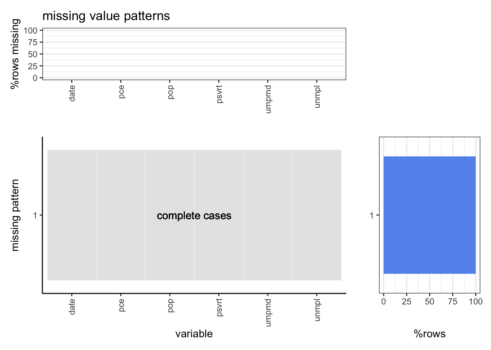

Chapter 7 Conclusion
Note: Grading is based both on your graphs and verbal explanations. Follow all best practices as discussed in class, including choosing appropriate parameters for all graphs. Do not expect the assignment questions to spell out precisely how the graphs should be drawn. Sometimes guidance will be provided, but the absense of guidance does not mean that all choices are ok.
IMPORTANT: THIS TEMPLATE DOES NOT INCLUDE THE SAMPLE GRAPHS THAT APPEAR IN THE .HTML VERSION OF THE ASSIGNMENT SO BE SURE TO VIEW THAT FILE AS WELL.
7.0.1 1. mycars missing patterns
Create a missing values plot for the mycars dataset created below (slightly different from the one in the lecture slides). Your plot should be in the style of extracat::visna() (no longer available on CRAN) using ggplot2 to create the main plot and two side plots and patchwork to put them together. It should show accurately: missing patterns, counts for missing by column and missing by pattern, and make it clear which row respresents complete cases. Bars in the side plots should be sorted and correspond to the rows and columns of the main plot. An example is provided though the aesthetics of your plot do not have to conform precisely to the example. Some code is provided to get you started with finding missing patterns. (Keep in mind that in the next question you will be turning this code into a function so to save yourself time later on write as generically as possible.)
library(tidyverse)
library(patchwork)
library(reshape2)
# Add NAs to mtcars dataset
set.seed(5702)
mycars <- mtcars
mycars[1:25, "gear"] <- NA
mycars[10:20, 3:5] <- NA
for (i in 1:10) mycars[sample(32,1), sample(11,1)] <- NAHints:
- You can use this code to find and count the missing patterns:
missing_patterns <- data.frame(is.na(mycars)) %>%
group_by_all() %>%
count(name = "count", sort = TRUE) %>%
ungroup()
sort_text <- names(sort(colSums(is.na(mycars)), decreasing = TRUE))
mod_data <- missing_patterns %>% subset(select=-count)
id <- which(rowSums(mod_data)==0)
row <- nrow(mod_data)
col <- ncol(mod_data)
mod_data <- mod_data %>%
mutate(ID = rownames(.)) %>%
melt(id.vars=c("ID")) %>%
mutate(missing = ifelse(ID == id,2,ifelse(value == "TRUE", 1, 0)))
main_ <- ggplot(mod_data, aes(x=factor(variable,levels=sort_text),
y=factor(ID,rev(unique(ID))))) +
geom_tile(aes(fill=factor(missing)),color = "white") +
scale_fill_manual(values = alpha(c("grey", "blueviolet","grey"),
c(.4,.4,0.9))) +
geom_text(aes(x=(1+col)/2,y=row-id+1), label = "complete cases") +
xlab('variable') +
ylab('missing pattern') +
guides(fill='none') +
theme_classic() +
theme(axis.text.x = element_text(angle = 90, vjust = 0.5, hjust=1))
mod_data_two <- ggplot(missing_patterns,
aes(x=factor(rownames(missing_patterns),
rev(rownames(missing_patterns))), y=count)) +
geom_bar(stat='identity',fill=ifelse(rownames(missing_patterns)==id,'cornflowerblue',alpha('cornflowerblue',0.5))) +
xlab('') +
ylab('row count') +
theme_bw() +
theme(panel.grid.major.y=element_blank()) +
coord_flip()
df_t <- data.frame(colSums(is.na(mycars)))
colnames(df_t) <- 'count'
mod_data_three <- ggplot(df_t,aes(x=factor(rownames(df_t),
levels=sort_text), y=count)) +
geom_bar(stat='identity',fill=alpha('cornflowerblue',0.5)) +
ggtitle('missing value patterns') +
theme_bw() +
theme(panel.grid.major.x=element_blank()) +
xlab('') +
ylab('num rows missing') +
theme(axis.text.x = element_text(angle = 90, vjust = 0.5, hjust=1))
final_plot <- "
111#
2223
2223
2223
"
mod_data_three+main_+mod_data_two+plot_layout(design=final_plot)
- To highlight the complete cases row you need a different fill scale than the one used to show missing vs. non-missing in the main plot (purple and grey in the example). This is a little tricky since you’re only allowed one fill scale in ggplot2. You can either use
alphato control the highlight withscale_alpha_manual(values = ...)or use the ggnewscale package which provides for multiple fill scales in the same graph.
7.0.2 2. Missing value plot function
- Create a function for creating missing plots based on your code from question 1. It should provide an option to show either missing counts or missing percent. The percent option for
mycarsis shown below.
missing_plot <- function(data, percent=FALSE)
{
missing_patterns <- data.frame(is.na(data)) %>%
group_by_all() %>%
count(name = "count", sort = TRUE) %>%
ungroup()
if(percent)
{
missing_patterns <- missing_patterns %>%
mutate(count=count/sum(count)*100)
}
sort_data <- names(sort(colSums(is.na(data)), decreasing = TRUE))
dataNew <- missing_patterns %>%
subset(select=-count)
id <- which(rowSums(dataNew)==0)
row <- nrow(dataNew)
col <- ncol(dataNew)
dataNew <- dataNew %>%
mutate(ID = rownames(.)) %>%
melt(id.vars=c("ID")) %>%
mutate(missing = ifelse(ID == id,2,ifelse(value == "TRUE", 1, 0)))
main_ <- ggplot(dataNew, aes(x=factor(variable,levels=sort_data),
y=factor(ID,rev(unique(ID))))) +
geom_tile(aes(fill=factor(missing)),color = "white") +
scale_fill_manual(values = alpha(c("grey", "blueviolet","grey"), c(.4,.4,0.9))) +
geom_text(aes(x=(1+col)/2,y=row-id+1), label = "complete cases") +
scale_x_discrete(label = function(x) abbreviate(x, minlength =5))+
xlab('variable') +
ylab('missing pattern') +
guides(fill='none') +
theme_classic() +
theme(axis.text.x = element_text(angle = 90, vjust = 0.5, hjust=1))
col_ <- ggplot(missing_patterns, aes(x=factor(rownames(missing_patterns), rev(rownames(missing_patterns))), y=count)) +
geom_bar(stat='identity', fill=ifelse(rownames(missing_patterns)==id, 'cornflowerblue', alpha('cornflowerblue',0.5))) +
xlab('') +
ylab(ifelse(percent,'%rows','row count')) +
theme_bw() +
theme(panel.grid.major.y=element_blank()) +
coord_flip()
if(percent)
{
col_<-col_+ylim(0,100)
}
DfThree <- data.frame(colSums(is.na(data)))
colnames(DfThree) <- 'count'
if(percent)
{
DfThree <- DfThree%>%mutate(count=count/nrow(data)*100)
}
row_ <- ggplot(DfThree,aes(x=factor(rownames(DfThree),
levels=sort_data), y=count)) +
geom_bar(stat='identity',fill=alpha('cornflowerblue',0.5)) +
ggtitle('missing value patterns') +
theme_bw() +
theme(panel.grid.major.x=element_blank()) +
scale_x_discrete(label = function(x) abbreviate(x, minlength =5))+
xlab('') +
ylab(ifelse(percent,'%rows missing','num rows missing')) +
theme(axis.text.x = element_text(angle = 90, vjust = 0.5, hjust=1))
if(percent)
{
row_<-row_ + ylim(0,100)
}
layout_ <- "
111#
2223
2223
2223
"
row_+main_+col_+plot_layout(design=layout_)
}
missing_plot(mycars, T)
You either put the function code in a separate .R file or include it in the .Rmd file.
- Show the output for both options (counts / percent) for the
economicsdataset in the ggplot2 package. (This is a test to see if your function works if there are no missing values.)
eco <- ggplot2::economics
missing_plot(eco, TRUE)
eco <- ggplot2::economics
missing_plot(eco, FALSE) c) Show the output for both options (counts / percent) for the
c) Show the output for both options (counts / percent) for the HollywoodMovies2011 dataset in the Lock5withR package. You can shorten the column names so they don’t overlap in the plot.
data <- Lock5withR::HollywoodMovies2011
missing_plot(data, TRUE)
data <- Lock5withR::HollywoodMovies2011
missing_plot(data, FALSE)
7.0.3 3. Setup your GitHub final project repo
- Set up your final project repository following the EDAVproject template. You can either choose one team member’s GitHub account, or create an organization to house the final project. Be sure to follow all of the steps in the README so your bookdown book renders with your information, not the placeholders in the template. Edit the link below to point to your rendered book:
https://vspvikram.github.io/Olympic_data_analysis
- Make sure that all team members have write access to the repository and have practiced making contributions. Edit the link below to point to your contributors page, showing that all team members have made contributions to the repo (Note that we do not have the ability to see who has write access, only who has contributed):
https://github.com/vspvikram/Olympic_data_analysis/graphs/contributors
- Discuss a plan for dividing up the work for the final project and briefly summarize what each person will do.
7.0.4 Future Contributions of each member:
Parth Gupta 1. Performance of countries given the season and throughout history. 2. Improvement or Degradation of Performance for athletes
Vikram Singh 3. Given the host country, how many medals has that country won? 4. The trend of women participation throughout the Olympic History.
Aniket Shahane 5. How is age correlated with the winning of medals across different sports? 6. How does the GDP per capita of each country correlate with its performance in the Olympics?
7.0.5 4. Missing values chapter
Write a first draft of the missing values chapter of your final project. You do not have to include all of the data you use in the final project. Choose one file and analyze it using techniques discussed in class for missing values. Include a plot using your function from Q2 as well as verbal interpretation of the plot. Edit this link to point to your chapter:
https://[ACCOUNT NAME].github.io/[REPO NAME]/missing-values.html
If your data for the final project has no missing values, you may use one of the following datasets instead for this question. You can include your answer here since it doesn’t belong in your final project.
fivethirtyeight package: avengers, bachelorette, dem_candidates, steak_survey, trumpworld_polls
openintro package: birds, ucla_textbooks_f18
data <- read.csv(file ='./athlete_events.csv')
missing_plot(data, TRUE)
missing_plot(data, FALSE) ## Observations
- In an event, exactly three people win medals, ie. Gold, Silver and Bronze, as a result around 75% values in the medal’s column are missing.
- In some sporting events, the weight and height are not necessarily measured. Consequently, around 25% values are missing as well. Upon inspection, we observe that weight and height measurements are missing together in most of the cases.
- Since the other columns like Name, City, Sport, Sex, Team, NOC, Games, Year, and Season are very important, there are no missing values in these columns.
- Surprisingly, there are some missing values in the Age column as well. By simple observation, we see that these rows belong to players (for instance, S. Abdul Hamid) that participated during the Olympic Games from 1920s-1950s. We hypothesize that these records must have been lost as a result they’re missing.
## Observations
- In an event, exactly three people win medals, ie. Gold, Silver and Bronze, as a result around 75% values in the medal’s column are missing.
- In some sporting events, the weight and height are not necessarily measured. Consequently, around 25% values are missing as well. Upon inspection, we observe that weight and height measurements are missing together in most of the cases.
- Since the other columns like Name, City, Sport, Sex, Team, NOC, Games, Year, and Season are very important, there are no missing values in these columns.
- Surprisingly, there are some missing values in the Age column as well. By simple observation, we see that these rows belong to players (for instance, S. Abdul Hamid) that participated during the Olympic Games from 1920s-1950s. We hypothesize that these records must have been lost as a result they’re missing.